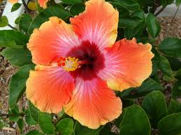
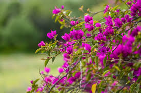
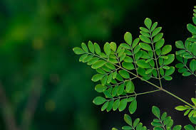
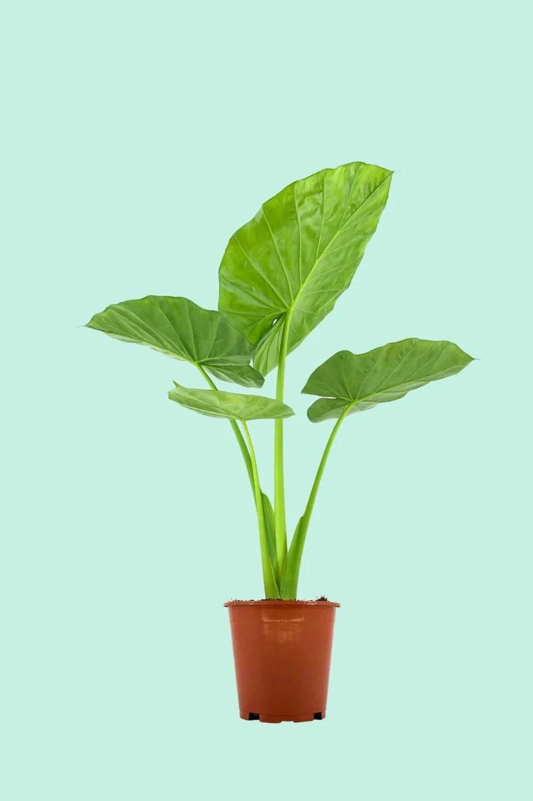
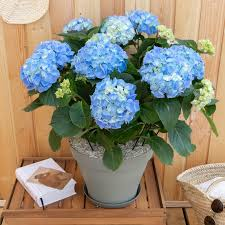
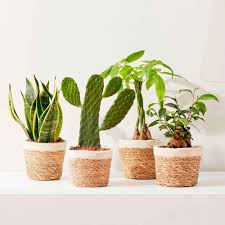
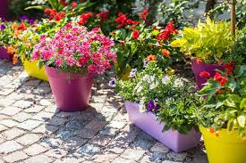

HIBISCUS

ARROSAGE
Arrose profondément, jusqu’à ce que l’eau s’écoule par le bas
du pot ou bien dans le sol, afin d’humidifier toute la motte racinaire
(double arrosage court recommandé).En climat chaud (comme au Sénégal),
un arrosage quotidien voire deux fois par jour est nécessaire pendant les
fortes chaleurs, réparti matin et soir, pour éviter le stress hydrique.
Utilise un système goutte à goutte pour un arrosage ciblé à la base,
minimalisant le gaspillage et assurant une hydratation régulière .
EMPLACEMENT
Le plein soleil (6 à 8 heures/jour) est indispensable pour une floraison
abondante et une croissance robuste.Par temps très chaud, notamment
en après-midi, procure un peu d’ombre légère (parasol, ombrage partiel) afin
d’éviter le brûlage des feuilles ou la décoloration des fleurs.Privilégie
un sol léger, riche en compost et bien drainé (pH entre 6,0 et 7,0),
surtout pour les hibiscus en pleine terre ou pot .
SOINS ET ENTRETIEN
Taille et taille légère
Il est recommandé de tailler jusqu’à un tiers de la plante au printemps
(ou début d’été dans les régions chaudes) pour encourager la ramification
.
BUGAINVILLIER

ARROSAGE
Le bougainvillier a besoin d'un arrosage profond mais peu fréquent. Pour les
plantes déjà établies, un arrosage tous les 3 à 4 semaines suffit, à condition
que le sol soit bien drainé .Pour les jeunes plants : un arrosage hebdomadaire
est recommandé pendant les premières semaines, et jusqu’à deux fois par semaine
en pots sous climat très chaud comme au Sénégal.Arrose toujours
au niveau du sol, sans mouiller le feuillage ou les fleurs,
pour éviter les maladies fongiques et optimiser l’absorption de l’eau.
EMPLACEMENT
Exposition : Plein soleil (au moins 6h par jour).
Climat : Aime la chaleur, craint le gel (au-dessous de 5°C).
Sol : Léger, bien drainé, pauvre en humus (éviter les sols trop
riches qui favorisent les feuilles au détriment des fleurs).
En intérieur (si hiver froid) : Près d'une fenêtre bien ensoleillée
SOIN ET ENTRETIEN
Après la floraison ou en fin d’hiver pour favoriser la ramification.
Supprimer les branches mortes ou désordonnées.
Fertilisation :
Apport d’engrais spécial plantes fleuries tous les 15 jours en période
de croissance (printemps-été): Tous les 2 à 3 ans, au printemps.
MORINGA

ARROSAGE
Jeune plant (moins de 3 mois) :
Arrosage régulier (2 à 3 fois/semaine), le temps que les racines s’installent.
Plante adulte :
Très résistante à la sécheresse.Arrosage 1 fois par semaine
voir moins si le climat est humide.Toujours laisser sécher
le sol entre deux arrosages.
EMPLACEMENT
Exposition : Plein soleil (c’est une plante tropicale).
Climat:Aime les climats chauds et secs.Tolère bien la sécheresse.
Sol:Léger, sableux, bien drainé.Il déteste l’humidité stagnante.
En pot ou en pleine terre : Les deux sont possibles.
SOIN ET ENTRETIEN
Taille :Tailler régulièrement pour éviter qu’il devienne
trop grand et stimuler la ramification.
Taille idéale : tous les 2-3 mois.
Engrais :Peu nécessaire, mais un peu de compost ou
fumier bien décomposé peut aider au démarrage.
Récolte :Les feuilles peuvent être cueillies régulièrement.
Les gousses (fruits) se récoltent quand elles deviennent sèches
VERT MAGAZINE

ARROSAGE
Fréquence : 2 fois par semaine (climat chaud), 1 fois par semaine
(climat tempéré)
Type d’arrosage : Laisser le sol s'assécher entre deux arrosages
EMPLACEMENT
Lumière : Lumière vive indirecte (évitez le soleil direct brûlant)
Aération : Endroit bien ventilé, sans courants d'air violents
Température : Entre 18 et 28 °C. Ne tolère pas le gel
SOIN ET ENTRETIEN
Nettoyage : Essuyer les feuilles avec un chiffon humide pour enlever la poussière
Taille : Couper les feuilles sèches ou abîmées
Rempotage : Tous les 1 à 2 ans, au printemps de préférence
Engrais : Apport mensuel d’un engrais universel liquide pendant
la période de croissance (mars à septembre)
ALOCASIA

ARROSAGE
Printemps / été : 1 à 2 fois par semaine (sol légèrement humide, jamais détrempé)
Automne / hiver : espacer les arrosages (1 fois tous les 10 jours)
⚠️ Attention :
Laissez sécher la couche supérieure du sol entre deux arrosages
Sensible au pourrissement des racines → utiliser un pot bien drainé
EMPLACEMENT
Lumière vive indirecte (évitez le soleil direct qui brûle les feuilles)
Peut tolérer une ombre légère, mais poussera plus lentement
Température :
Idéale entre 18 et 28 °C
Ne supporte pas les courants d’air froids ou les températures inférieures à 15 °C
Humidité :
Aime une forte humidité (>60%)
Vaporisez les feuilles régulièrement ou placez un humidificateur à proximité
SOIN ET ENTRETIEN
Taille :
Retirer les feuilles jaunies ou abîmées à la base
🧴 Engrais :
1 fois par mois d’avril à septembre avec un engrais liquide pour plantes vertes
🌱 Rempotage :
Tous les 1 à 2 ans, au printemps, dans un terreau riche et bien drainant
🐛 Parasites :
Surveillez les cochenilles, araignées rouges et pucerons
⚠️ Remarques importantes
❗ Toxique pour les animaux et les enfants si ingérée (présence de cristaux d’oxalate de calcium)
📍 Idéale pour salons lumineux ou vérandas
JEUNE BAOBAB

ARROSAGE
En croissance (printemps-été) : 1 à 2 fois par semaine
En dormance (hiver) : espacer fortement voire arrêter l’arrosage
🌱 Sol :
Sol drainant et pauvre (type sableux ou caillouteux)
⚠️ Attention :
Trop d’eau = pourriture racinaire
Toujours laisser sécher complètement le sol entre deux arrosages
EMPLACEMENT
🌞 Lumière :
Exposition plein soleil (essentiel à sa croissance)
À placer dehors dès que les températures sont supérieures à 20 °C
🌡️ Température :
Aime la chaleur : entre 25 et 35 °C idéalement
Ne supporte pas le gel (à rentrer en pot si climat frais)
🌬️ Aération :
Bonne circulation d’air, surtout en intérieur ou en serre
SOIN ET ENTRETIEN
Culture en pot (jeune arbre) :
Utiliser un pot avec trous de drainage
Substrat : mélange sable + terreau pauvre + perlite ou gravier
✂️ Taille :
Pas nécessaire jeune, mais possible pour équilibrer la forme
🌱 Rempotage :
Tous les 2 ans environ, au printemps
🌞 Exposition progressive au soleil si élevé en intérieur
BERGAMOTTE

ARROSAGE
Printemps/été : 1 à 2 fois par semaine
Automne/hiver : réduire à 1 fois tous les 10-15 jours
💦 Conseils :
Arroser lorsque les 2-3 cm supérieurs du sol sont secs
Ne jamais laisser de l'eau stagner dans la soucoupe
🌱 Sol :
Sol drainant, légèrement acide, riche en humus
EMPLACEMENT
🌞 Lumière :
Besoin de plein soleil au moins 6 h par jour
En intérieur : placer près d’une fenêtre très lumineuse
🌡️ Température :
Idéale entre 20 et 30 °C
Ne supporte pas le gel : à rentrer en hiver si cultivé en pot
🌬️ Ventilation :
Aime les endroits bien aérés, mais à l’abri des vents forts
SOIN ET ENTRETIEN
✂️ Taille :
Après la fructification pour aérer la ramure et favoriser de nouvelles pousses
🌱 Rempotage :
Tous les 2 à 3 ans au printemps si cultivé en pot
🧴 Engrais :
Engrais spécial agrumes toutes les 3 semaines de mars à septembre
🍈 Floraison et fruits :
🌸 Floraison au printemps (parfumée)
🍊 Fruits en hiver (à maturité vers novembre-février)
BAKKER

ARROSAGE
🗓️ Fréquence :
Exemple : 1 fois par semaine
Réduire en hiver si la plante entre en repos
⚠️ Conseils :
Laisser sécher légèrement la surface avant d’arroser
Éviter les excès d’eau (trous de drainage indispensables)
EMPLACEMENT
☀️ Lumière :
Exemple : Lumière vive sans soleil direct
Adapter selon la plante (ombre, mi-ombre, plein soleil)
🌡️ Température :
Exemple : Entre 18 et 25 °C
Hivernage possible en intérieur si besoin
💨 Aération :
Endroit bien ventilé sans courants d’air froids
SOIN ET ENTRETIEN
✂️ Taille / Nettoyage :
Enlever les feuilles mortes ou abîmées
Tailler légèrement pour stimuler la croissance (selon espèce)
🧴 Engrais :
Exemple : Engrais liquide 1 à 2 fois par mois (mars à septembre)
🌱 Rempotage :
Tous les 1 à 2 ans, au printemps
GAMM VERT

ARROSAGE
Quand arroser :
attendre que la surface du sol sèche avant l’arrosage.
En été, 1 à 2 fois par semaine ; en hiver, seulement si
le feuillage flétrit
Technique : arroser par le dessus ou par le dessous pour
protéger les racines. En pleine chaleur, immerger la motte quelques
minutes, égoutter soigneusement et éliminer l’eau de soucoupe
Autres options :
système goutte-à-goutte, rétenteurs d’eau ou paillis pour
économiser l’eau en période de vacances
EMPLACEMENT
Lumière : près d’une fenêtre lumineuse, mais à l’abri du
soleil brûlant. L’est ou l’ouest est souvent idéal
Température :
entre 18°C et 25°C ; éviter les courants d’air froid
ou l'excès de chauffage
Humidité :
les plantes en intérieur apprécient une bonne hygrométrie,
surtout en hiver – pensez à brumiser le feuillage
SOIN ET ENTRETIEN
Feuilles & fleurs fanées :
supprimez-les régulièrement. Pour les plantes grimpantes ou à tiges,
pincez les pousses longues pour encourager la ramification
Nettoyer les feuilles :
enlever la poussière avec un chiffon humide pour maximiser la photosynthèse
Tuteurage ou soutien : utile pour les plantes grimpantes ou à grand développement.